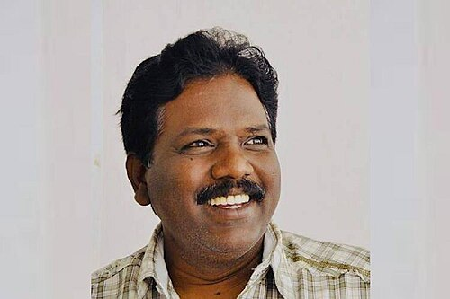
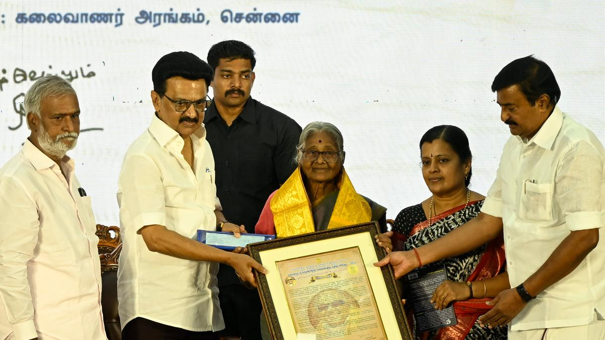

 Award : Ambedkar Award Year : 2024 Why Recognized: Advocacy for Dalit rights and social justice
✨ ——————————— ✨
Award : Perarignar Anna Award Year : 2024 Why Recognized: Leadership in Dravidian movement and public service
Award : Pavendar Bharathidasan Award Year : 2024 Why Recognized: Excellence in Tamil poetry and cultural thought
Award : Thiruvalluvar Award Year : 2023 Why Recognized: Championing Thirukkural philosophy as life ethics
 Award : Kalaignar Award Year : 2025 Why Recognized: Dedication to Tamil scholarship and media
🔗 View Full Details